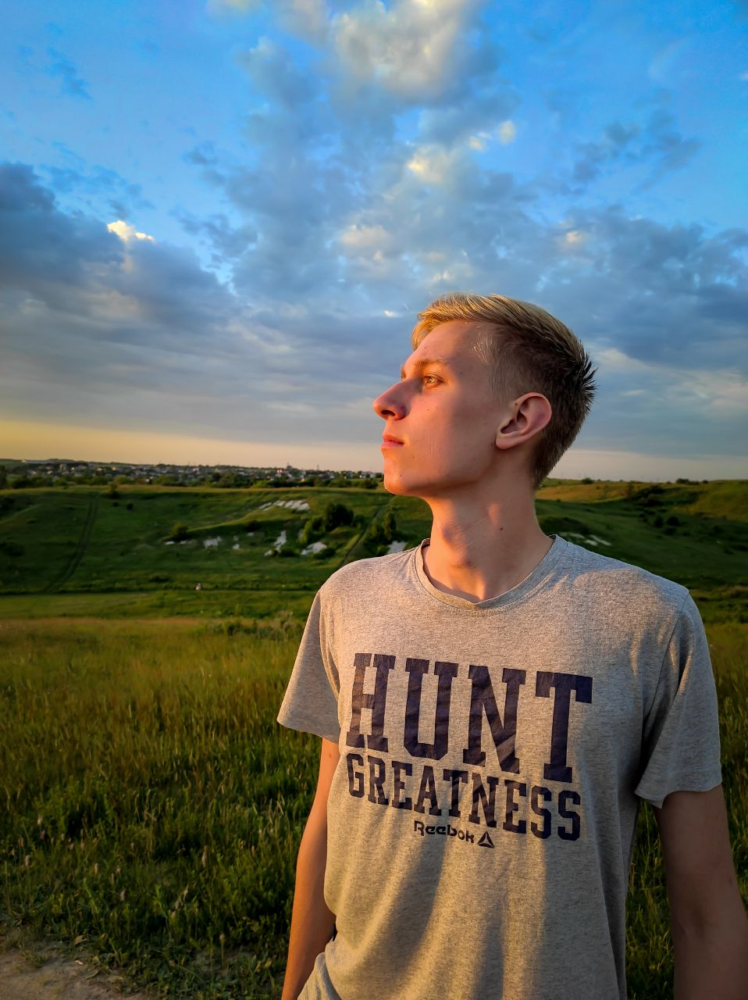
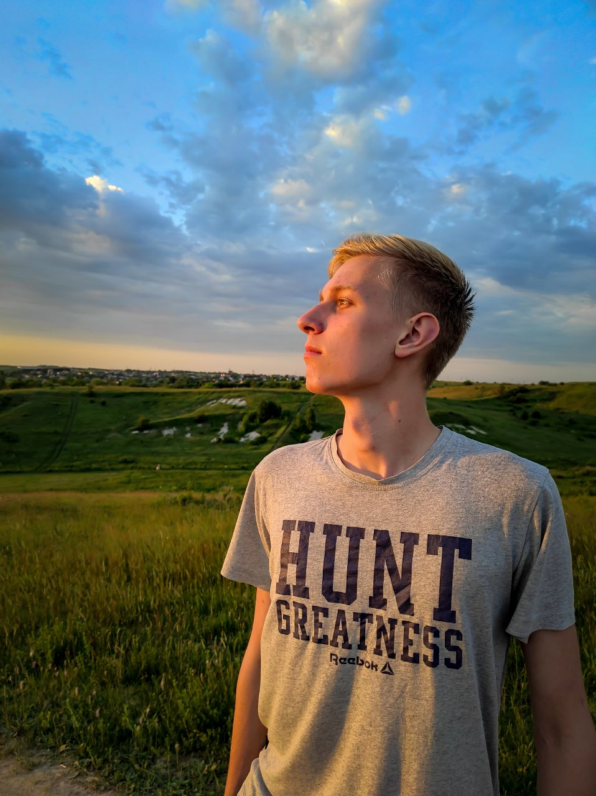
Я пам’ятаю той момент, коли ти сказав, що дуже радий, що хтось помітив в тобі те, що люди називають харизмою, бо ти начебто намагався її розвивати. Але я впевнена, що це не воно. Твоя харизма – це твоя посмішка, бо коли ти щиро посміхаєшся, мені здається, наче у найпохмуріший день виглядає сонечко, твоя харизма у твоєму погляді, бо часом, коли ти дивишся на мене, у твоїх очах хочеться потонути, твоя харизма у твоєму голосі та у твердості переконань, непорушній позиції, чесності та щирості. Твоя харизма – це той маленький шрам на щічці, який ніхто не знає звідки взявся, але я впевнена, це також одна з тих невід’ємних речей, у які я в тобі закохана. Я бажаю тобі залишитись таким же харизматичним, яким ти є зараз.
 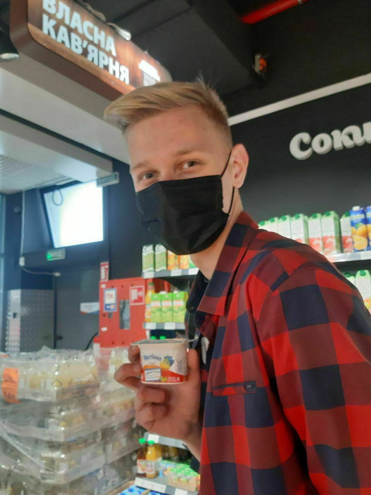
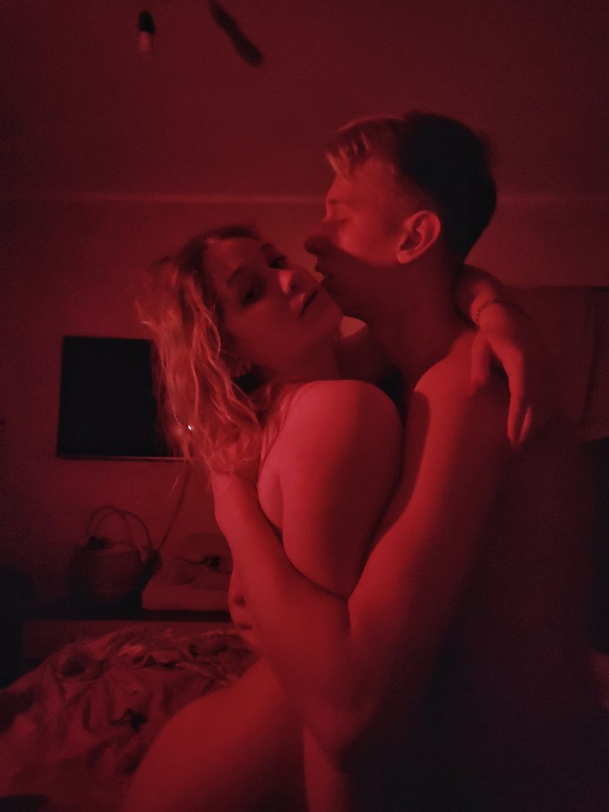
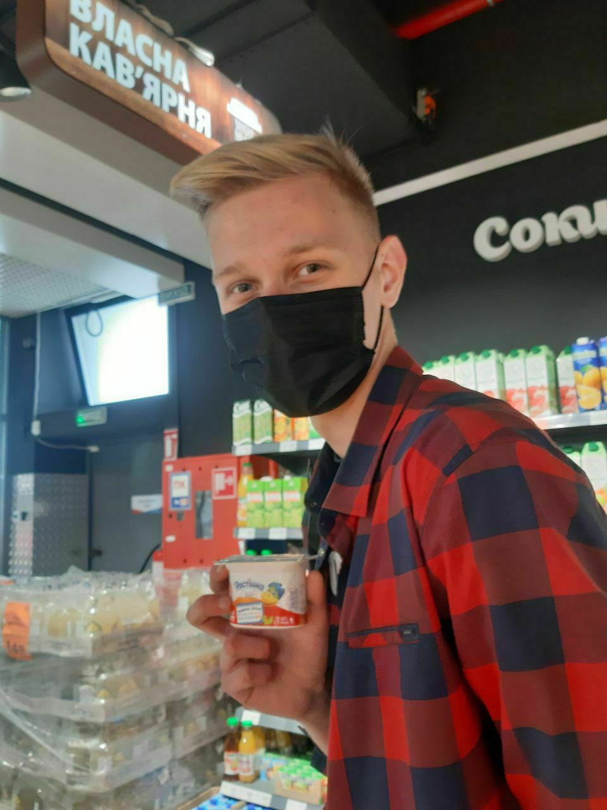
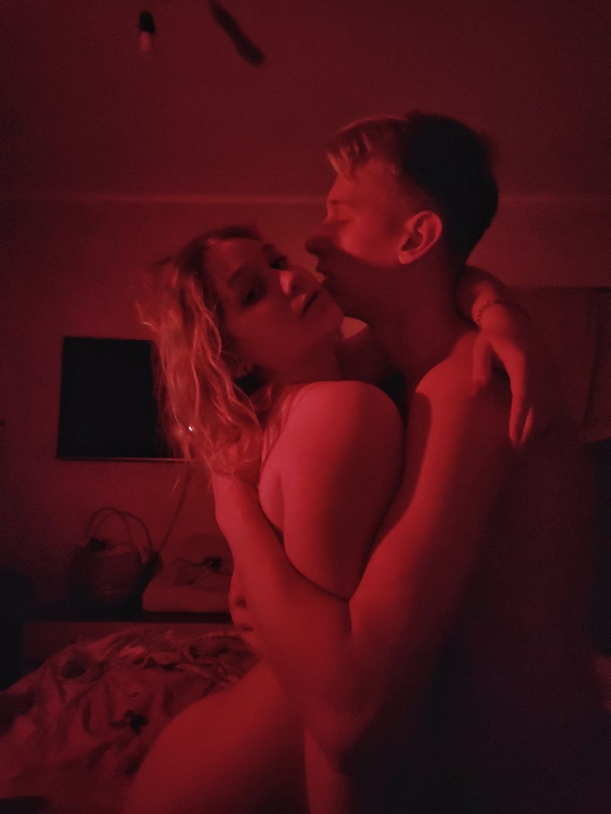
Пройшло 2 роки, і ти з хлопчини став справжнім чоловіком… моїм справжнім чоловіком. Тим, з ким я хочу скоро одружитися та у майбутньому хочу бачити батьком своїх дітей. Нікого іншого, тільки тебе. Котику, із усіх хлопців, яких мені доводилося зустрічати на своєму життєвому шляху, ти – найвідповідальніший. Із холодною головою ти зустрічаєш усі невдачі і я захоплююсь тим, як ти часом дієш у стресових ситуаціях. Я дуже рада знати, що така людина як ти тримає моє крихке серденько у своїх руках і скоро стане головою моєї майбутньої сім’ї. Я бажаю тобі лишитись таким же сильним духом і серцем, яким ти є зараз.
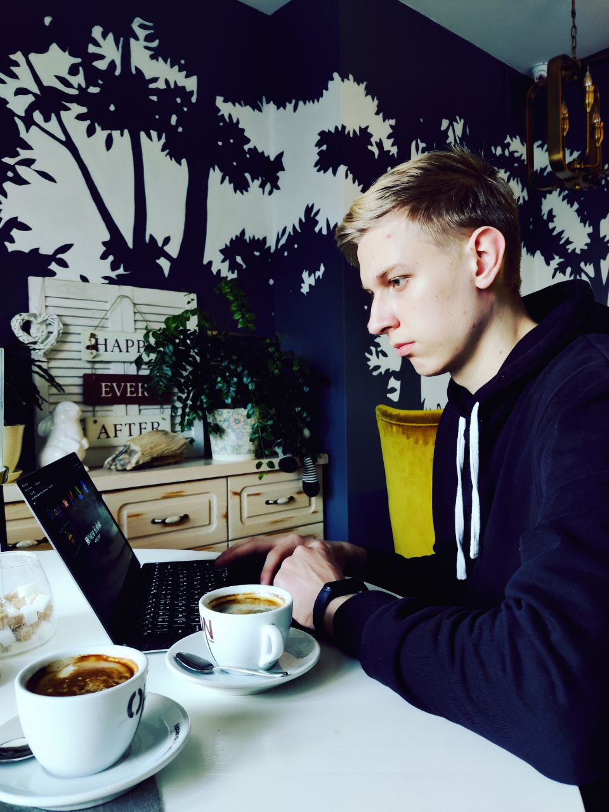 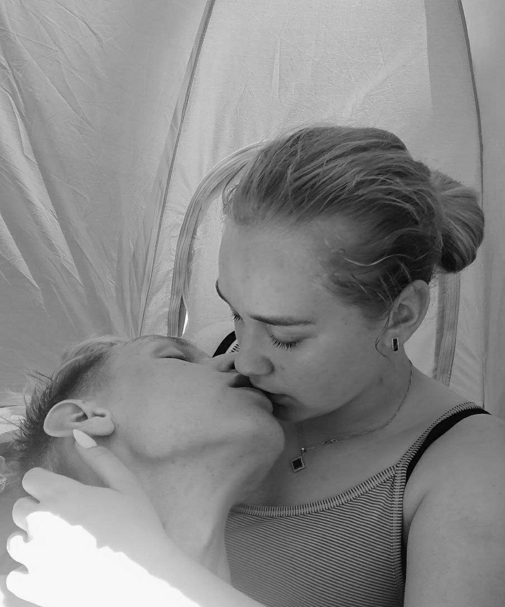 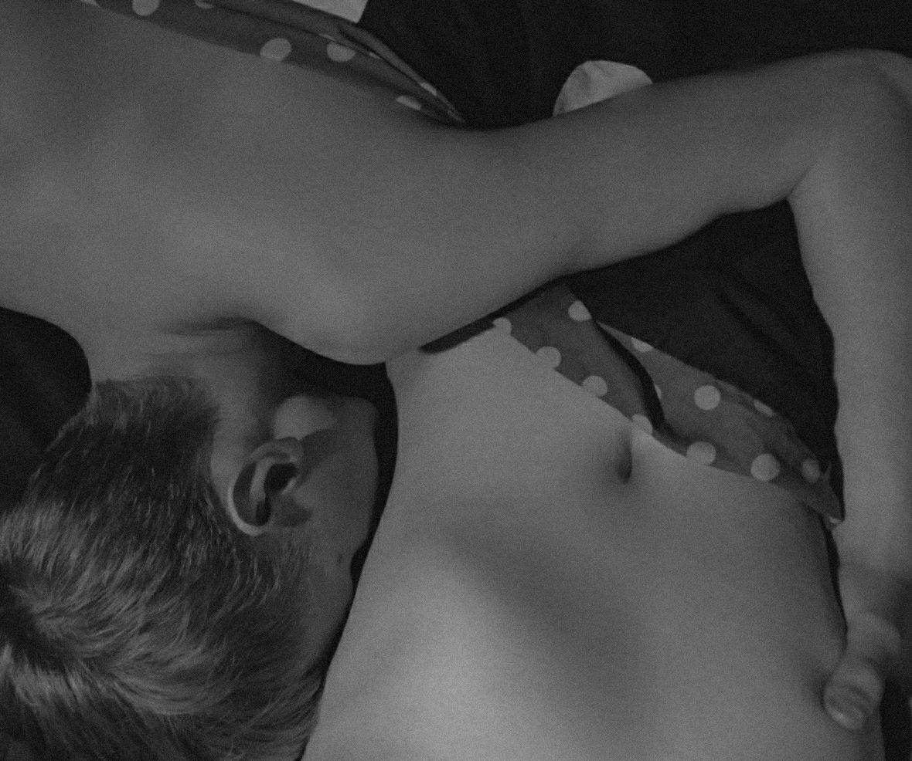Коли ми почали зустрічатись, я була збита з пантелику твоїм піклуванням і оберіганням. Тоді мені це не сподобалось, але зараз я не можу уявити свого ранку без смс в телефоні з текстом «доброго ранку, кохана» від тебе. Скоро ми перестанемо це писати, і ці слова стануть нашою ранковою рутиною не в телефоні, а наяву. Ще трошки, і ми зможемо починати ранок одне одного з ніжного поцілунку, який часом переростатиме у пристрасний секс. Твої ніжні дотики, обійми, поцілунки та щоденні зізнання у коханні – це речі, без яких я не можу уже жити. Ти найніжніша людина у моєму житті, і я ніколи не отримувала стільки любові, як від тебе. На людях, Назарчику, ти холодний, зосереджений та брутальний чоловік, проте коли ми лишаємося лише вдвох, я знаю, що ти стаєш моїм наймилішим на найніжнішим котиком, моєю найсолодшою булочкою і найсмачнішою запеканочкою, яка обійме, поцілує і приласкає мене так, як ніхто більше у цьому світі. Я бажаю тобі лишитися таким же ніжним, лагідним і солоденьким, яким ти є зараз.
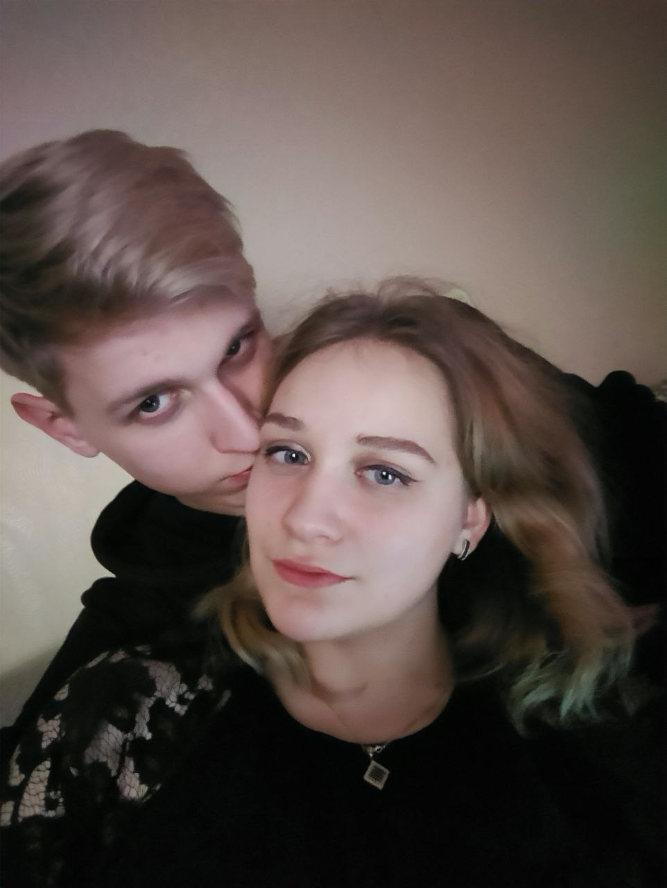 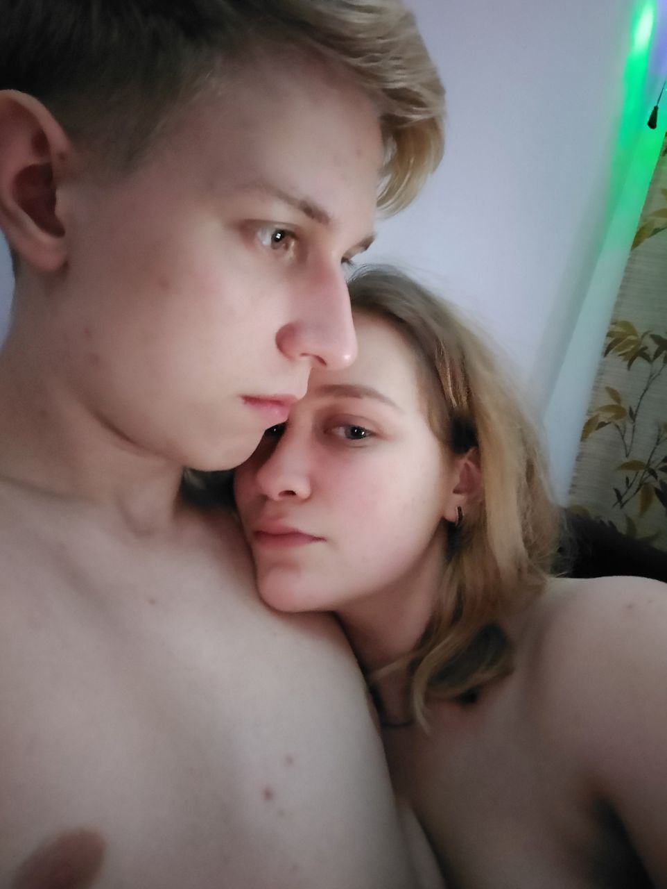 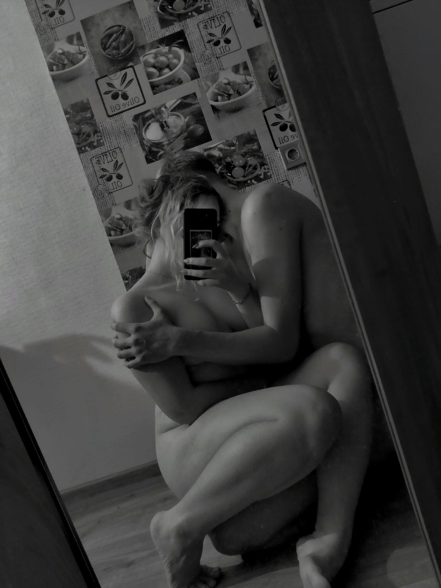Коли я дивлюся на твоє оголене тіло, мої трусики стають мокрими. Можливо, за загальноприйнятими критеріями твоя фігура не вважалась би найкращою, проте коли я дивлюся на тебе – щоразу по новій закохуюсь. Я кохаю кожний вигин твого тіла, венисті руки, які так ніжно прижимають мене до тебе. Люблю твої довгі ніжки і ляшечки, хочу зацілувати кожен кубик твого пресу, залишаючи на них мокрі сліди, обожнюю твої гострі ключиці та довгу шию, і навіть кохаю твій третій сосочок. Твій член дійсно дуже великий, красивий і рівний. Ніколи б не могла подумати, що міньєт дійсно буде приносити мені задоволення. Навіть зараз, коли я згадую те, як я беру в ротик твою голівку, смак твоєї смазочки, запах збудженого члена, я сильно завожусь і дуже хочу твій член в собі прямо зараз. Згадую свій перший міньєт в лісі.. знаєш, у мене дійсно було бажання принести тобі задоволення і взяти твій член в ротик, тому зараз я розумію, що це рішення було абсолютно зваженим і щирим. Я дуже рада, що ти став моїм першим сексуальним партнером. Для першого разу ти зробив все дійсно ідеально, і я дійсно щаслива віддати тобі свою цноту та всі мої перші рази: перший поцілунок, секс, любов... Твоє тіло – найкраще, яке я тільки могла тільки бажати для свого хлопця.
Попереду нас чекає спільне подружнє життя, багато роботи, розвитку, сексу, багато сліз: від щастя, і ні, нам прийдеться бути разом у горі і в радості, і багатстві і бідності.. ти ідеш в доросле життя, та я тобі обіцяю, що ти йдеш не один. Я буду поруч з тобою, буду завжди. Де б ти не був, в якій би ситуації не опинився, я буду поруч з тобою. Я обіцяю стати твоєю підтримкою і опорою у подружньому житті і назавжди лишитися твоєю другою половинкою.
Референс: Окрему подяку я хочу в якійсь степені висловити твоїм батькам. Незважаючи на мою думку, яка лишається актуальною, я хочу подякувати твоїй сім’ї за те, що виховали тебе гідним чоловіком та прекрасною людиною, яка є моїм ідеалом, яку я щиро кохаю. Зрозуміло, що більшість з твоїх рис – це твоя власна робота над собою, проте свій вклад вони беззаперечно внесли, за що я вдячна. Отже, я вітаю тебе, коханий, з твоїм повноліттям. Знаходь щастя у буденних і простих речах, адже ми завжди самі відповідальні за своє щастя. Я бажаю тобі міцного здоров’я, гарного настрою завжди, вірних друзів та нехай лише хороші люди оточують тебе. Шукай себе у житті, займайся тим, що подобається і не втрачай свого вогника в серці й очах, які я так кохаю. Прокидайся щоранку з впевненістю, навіщо ти це робиш, будь впевнений у своїх цілях та досягай їх, нехай удача завжди супроводжує тебе. З впевненістю крокуй по життєвому шляху, і я буду крокувати поруч, допомагаючи тобі з усіма тими цілями. Нехай усі мрії і бажання збудуться. Кохай, Назарчику, і я буду завжди кохати тебе. Ти моя найсолодша повнолітня булочка, і я кохаю тебе понад уже у своєму житті!!!!!!!!!!